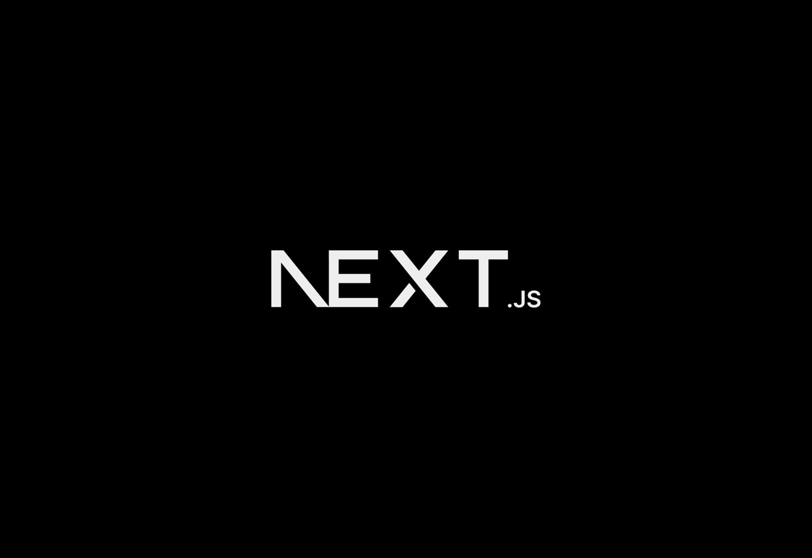

Autonomous Incident Agent Team
Multi-agent incident intelligence with routing, escalation logic, and deterministic decision paths.
OpenExtended list of selected project work and patent artifacts.
Multi-agent incident intelligence with routing, escalation logic, and deterministic decision paths.
Open
Schema-aligned LLM compiler for predictable markdown generation and UI-ready outputs.
Open
Emergent signal detection and alert intelligence backed by patent-oriented architecture.
Open
Computer vision on edge with OCR, recognition pipelines, and low-latency inference optimization.
OpenAdaptive query intelligence for enterprise support operations with emergent incident pattern detection.
ViewTechnical publication trail for adaptive detection architecture, clustering, and response signal intelligence.
ViewFocus area on enterprise query signal extraction, anomaly surfacing, and escalation-aware AI support workflows.
View